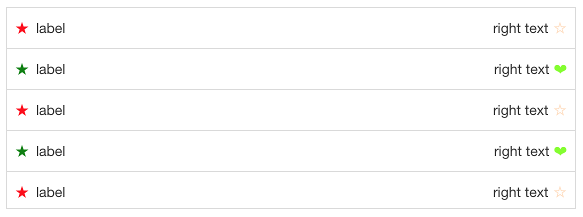
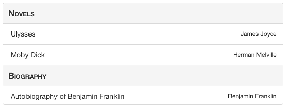
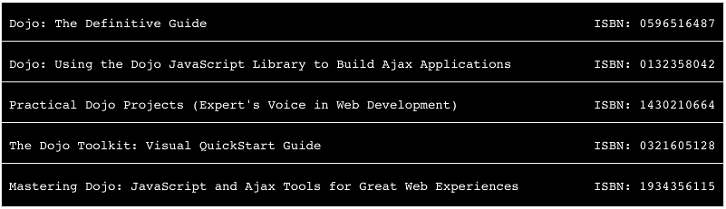
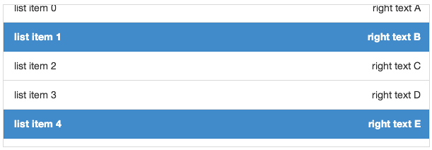

deliteful/list/List
The deliteful/list/List custom element (d-list custom tag) renders an optionally scrollable list of items that
are retrieved from an array or a store object from the dstore project.
The list inherits from the delite/Store class and as such any valid dstore/Store
implementation can be used to provide data to the list. No store is provided by default and the application developer
has to provide one created either programmatically or in markup.
Items rendered by the list are standard javascript objects. The list delegates the rendering of its items to an item renderer widget.
The default item renderer implementation (deliteful/list/ItemRenderer) renders objects that define any of the following properties:
-
label: the label of the item, displayed on the left (or on the right if direction is right to left) -
righttext: a text to display on the right (or on the left if direction is right to left) -
iconclass: css class to apply to a div before the label in order to display an icon -
righticonclass: css class to apply to a div after the right text in order to display an icon
Here is a screenshot of a list that displays items using the default renderer:

Any custom item renderer can be specified using the itemRenderer property of the widget.
The widget also provides the following capabilities:
- List items can be grouped into categories (see Categorized items);
- List items can be selectable (see Selection support);
- For maximum flexibility, both
grid,listbox, andmenuWAI-ARIA roles are supported (see Accessibility).
Table of Contents
Element Instantiation
Element Configuration
Element Styling
User Interactions
Mixins
Element Events
Enteprise Use
Element Instantiation
See delite/Widget for full details on how instantiation lifecycle is working.
Declarative Instantiation
<!-- A list of categorized items that uses the default item renderer, -->
<!-- mapping the sales property of items to righttext, and using the -->
<!-- region property as the item category. The store is referenced through -->
<!-- the source property -->
<d-list righttextAttr="sales" categoryAttr="region">
<!-- Add the following items to the store -->
{ "label": "France", "sales": 500, "profit": 50, "region": "EU" },
{ "label": "Germany", "sales": 450, "profit": 48, "region": "EU" },
{ "label": "UK", "sales": 700, "profit": 60, "region": "EU" },
{ "label": "USA", "sales": 2000, "profit": 250, "region": "America" },
{ "label": "Canada", "sales": 600, "profit": 30, "region": "America" },
{ "label": "Brazil", "sales": 450, "profit": 30, "region": "America" },
{ "label": "China", "sales": 500, "profit": 40, "region": "Asia" },
{ "label": "Japan", "sales": 900, "profit": 100, "region": "Asia" }
</d-list>
Programmatic Instantiation
With dstore/Memory as source
require(["dstore/Memory", "deliteful/list/List", "requirejs-domready/domReady!"], function (Memory, List) {
// Create a memory store for the list and initialize it
var dataSource = new Memory({idProperty: "label", data:
[
{ label: "France", sales: 500, profit: 50, region: "EU" },
{ label: "Germany", sales: 450, profit: 48, region: "EU" },
{ label: "UK", sales: 700, profit: 60, region: "EU" },
{ label: "USA", sales: 2000, profit: 250, region: "America" },
{ label: "Canada", sales: 600, profit: 30, region: "America" },
{ label: "Brazil", sales: 450, profit: 30, region: "America" },
{ label: "China", sales: 500, profit: 40, region: "Asia" },
{ label: "Japan", sales: 900, profit: 100, region: "Asia" }
]});
// A list of categorized items from dataSource, that uses the default item renderer,
// mapping the sales property of items to righttext and using the region property
// as the item category.
var list = new List({source: dataSource, righttextAttr: "sales", categoryAttr: "region"});
list.placeAt(document.body);
});
With an array as source
require(["deliteful/list/List", "requirejs-domready/domReady!"], function (List) {
// Create a memory store for the list and initialize it
var dataSource =
[
{ label: "France", sales: 500, profit: 50, region: "EU" },
{ label: "Germany", sales: 450, profit: 48, region: "EU" },
{ label: "UK", sales: 700, profit: 60, region: "EU" },
{ label: "USA", sales: 2000, profit: 250, region: "America" },
{ label: "Canada", sales: 600, profit: 30, region: "America" },
{ label: "Brazil", sales: 450, profit: 30, region: "America" },
{ label: "China", sales: 500, profit: 40, region: "Asia" },
{ label: "Japan", sales: 900, profit: 100, region: "Asia" }
];
// A list of categorized items from dataSource, that uses the default item renderer,
// mapping the sales property of items to righttext and using the region property
// as the item category.
var list = new List({source: dataSource, righttextAttr: "sales", categoryAttr: "region"});
list.placeAt(document.body);
});
Element Configuration
Scroll capabilities
Note that the list is only scrollable if the size of its content (the rendered items) is longer than the height of the list widget.
If you do not want the list to be scrollable, you can set its scrollDirection property
to "none" in order to remove the default scrolling capability.
Store capabilities
Store instantiation
No source is created by default and one has to provided to the list for it to display its items. The source can be instanciate with 3 different ways.
Declaratively
<d-list>
{"label": "First item", "iconclass": "my-icon-class-a"},
{"label": "Second item", "iconclass": "my-icon-class-b"},
...,
{"label": "Last item", "iconclass": "my-icon-class-z"}
</d-list>
Programmatically with a dstore/Store
require(["dstore/Memory", "dstore/Trackable", "deliteful/list/List"], function (Memory, Trackable, List) {
var list = new List();
var source = new (Memory.createSubclass([Trackable], {}))();
var item1 = {...};
var item2 = {...};
source.add(item1);
source.add(item2, {beforeId: item1.id});
list.source = source;
});
If the provided source is trackable (see dstore documentation), that is when it extends
dstore/Trackable, the widget will react to addition, deletion, move and update of the source content and
refresh its rendering accordingly.
Programmatically with an array
require(["decor/ObservableArray", "decor/Observable", "deliteful/list/List"], function (ObservableArray, Observable, List) {
var list = new List();
var source = new ObservableArray();
var item1 = new Observable({...});
var item2 = new Observable({...});
source.push(item1);
source.push(item2);
list.source = source;
});
If the provided source is observable, that is when it is an decor/ObservableArray, the widget will react to addition,
deletion and move of the source content and refresh its rendering accordingly.
If the items of the array are decor/Observable, the widget will also react to update.
Mapping capability
Because the List widget inherit from delite/StoreMap, you can redefine at will the mapping between
your source items and the ones expected by the renderer using mapping attributes and functions, as in the following example:
require([
"deliteful/list/List",
"requirejs-domready/domReady!"
], function (List) {
var list = new List();
// Map the title property of a source item to
// the label property supported by the renderer
list.labelAttr = "title";
// Map a substring of the title property
// of a source item to the righttext property
// supported by the renderer
list.righttextFunc = function (item, source, value) {
return item.title.split(" ")[0];
};
list.source.add({title: "first item"});
...
list.placeAt(document.body);
});
See the delite/StoreMap documentation for more information about all the available mapping options.
If you were not to use the delite/StoreMap capabilities but decided to redefine the itemToRenderItem(item) method (inherited from delite/Store),
be aware that your custom implementation of the method MUST return items that have the same identity than the corresponding source items, as the List
is relying on it.
Here is an example of redefinition of the itemToRenderItem(item) method, using the default store with an identityAttribute value set to the default one, id:
require(["deliteful/list/List"], function (List) {
var list = new List();
list.itemToRenderItem = function () {
// The list expect an identity for the item so is MUST be copied in the render item.
return {id: item.id, righttext: item.label};
}
});
Errors encountered when querying the store are reported by the widget through a "query-error" event.
It should be listened to in order to react to it in the application, as in the following example:
var list = new List();
list.on("query-error", function (error) {
// Report the error to the user
...
});
Categorized items

The List widget supports categorized items, that are rendered with a category header that separates
each category of items in the list. To enable this feature, use the categoryAttr property to
define the name of the item property that holds the category of the item, as in the following
example:
var list = new List();
list.categoryAttribute = "category";
list.source = ...;
list.source.add({label: "first item", category: "Category A"});
list.source.add({label: "second item", category: "Category A"});
list.source.add({label: "third item", category: "Category B"});
An alternative is to set categoryFunc to a function that extract the category from the source item,
as in the following example:
var list = new List();
list.categoryFunc = function(item, source) {
return item.category;
});
list.source = ...;
list.source.add({label: "first item", category: "Category A"});
list.source.add({label: "second item", category: "Category A"});
list.source.add({label: "third item", category: "Category B"});
As with the rendering of items, the actual rendering of the categories in the list is delegated to a category renderer widget.
The default one is deliteful/list/CategoryRenderer, but a custom category renderer can be specified
using the categoryRenderer property of the list (see the custom renderers section for more details).
Custom renderers

Custom item renderer
The actual rendering of the items in the list is delegated to an item renderer widget.
The default one is deliteful/list/ItemRenderer, but a custom item renderer can be specified
using the itemRenderer property of the list.
A custom item renderer must extends deliteful/list/ItemRenderer. It accesses the item to render in its item property.
It must assign to its renderNode property the node in which the item is rendered .
If the rendered item have actionable / keyboard navigable nodes, those are set using the navindex attribute, that behave simillarily to the standard tabindex attribute.
Here are is an example of custom item renderer that illustrate these concepts:
Custom category renderer
The actual rendering of the categories in the list is delegated to a category renderer widget.
The default one is deliteful/list/CategoryRenderer, but a custom category renderer can be specified
using the categoryRenderer property of the list.
A custom category renderer is similar to a custom item renderer, except that it extends deliteful/list/CategoryRenderer.
Here are is an example of custom category renderer:
Element Styling
Supported themes
This widget provides default styling for the following delite themes:
- bootstrap
CSS Classes
The List widget comes with two different styling that are applied by setting the baseClass property
to one of the following values:
| class name | effect |
|---|---|
d-list |
the list is displayed with an edge to edge layout. This is the default baseClass. |
d-rounded-list |
the list has rounded corners and both a left and right margin. |
Rendered Item Styling
Items are rendered inside a DIV element with the CSS class d-list-item.
By default, all items are rendered with the same height defined using the following CSS:
.d-list-item .d-list-cell {
height: ...;
}
To define variable height for the items, use the following CSS:
.d-list-item .d-list-cell {
height: inherit;
}
When an item has the focus, the style of the cell in which it is rendered can be defined using the css selector .d-list-item .d-list-cell:focus.
The default item renderer allows further styling of its content using the following CSS classes:
| class name | applies to |
|---|---|
d-list-item-icon |
the div before the label |
d-list-item-label |
the label |
d-list-item-right-text |
the right text |
d-list-item-right-icon |
the div after the right text |
Rendered Category Styling
Categories are rendered inside a DIV element with the CSS class d-list-category.
By default, all categories are rendered with the same height defined using the following CSS:
.d-list-category .d-list-cell {
height: ...;
}
To define variable height for the categories, use the following CSS:
.d-list-category .d-list-cell {
height: inherit;
}
When a category has the focus, the style of the cell in which it is rendered can be defined using the css selector .d-list-category .d-list-cell:focus.
Selection Styling
Depending on the selectionMode property value, the following CSS classes are added to the list:
-
d-selectablewhenselectionModeissingle; -
d-multiselectablewhenselectionModeismultiple.
The CSS class d-selected is added to each list item that is currently selected.
The style of a selected item can be customized using the following css:
/* CSS selector for a selected item in a list with selectionMode = "single" */
.d-selectable .d-list-item.d-selected {
...
}
/* CSS selector for a selected item in a list with selectionMode = "multiple" */
.d-multiselectable .d-list-item.d-selected {
...
}
To illustrate these concepts, here is a sample that demonstrates how to use CSS to display a checkmark on selected items using the default item renderer:
User Interactions
Scroll
The widget uses the browser native scroll to allow the user to scroll its content: all the standard scroll interaction of the platform are supported (including using a mousewheel).
Action
In most cases, when the user clicks or taps a list item the application needs to perform an action. This can easily be achieved by listening to regular click events. It is typically easier to wait for the events to bubble and listen to them at the list level as follows:
<d-list onclick="actionHandler(event)"></d-list>
with
function actionHandler(event) {
var renderer = event.currentTarget.getEnclosingRenderer(event.target);
if (renderer) {
// use the info on renderer.item and perform an action
}
}
Selection
When the action on the list items has to be permanent you should consider using the list selection mechanism instead of listening to click events. In addition to managing the list of selected items this will provide with with a default CSS rendering for the selected items.
The list uses the delite/Selection mixin to provide support for selectable items.
By default, items in the list are not selectable, but you can change this behavior using the selectionMode property
of the widget:
<d-list selectionMode="multiple"></d-list>

When the selection mode is "single", a click or tap on a item (or a press on the Space key
when an item has the focus) select it and de-select any previously selected item.
Clicking on a selected item has the effect of de-selecting it.
When the selection mode is "radio", a click or tap on a item (or a press on the Space key
when an item has the focus) select it and de-select any previously selected item.
Clicking on a selected item has no effect.
When the selection mode is "multiple", a click or tap on an item (or a press on the Space key when an item has
the focus) toggle its selected state.
See the Events/Selection section for how to listen to selection events.
Mixins
No Mixin is currently provided for this widget.
Element Events
Store query
When the widget has finished rendering the items queried from the source, it emits a query-success event. The renderItems property of the event
is an array of the items displayed by the widget.
If the widget fails to query its source to retrieve the items to render, it emits a query-error event (see Store capabilities for more information).
Selection
When the current selection changes, a selection-change event is emitted. Its oldValue property
contains the previous selection, and its newValue property contains the new selection.
You can register the event programmatically using the Widget.on method or in markup as follows:
<d-list on-selection-change="selectionHandler(event)"></d-list>
with
function selectionHandler(event) {
console.log("newly selected item: "+event.newValue);
}
Enterprise Use
Accessibility
The widget supports three different WAI-ARIA roles:
- grid, which is the default role
-
listbox, which can be simply using
setAttributemethod. -
menu, which can be simply using
setAttributemethod.
grid role
When using the default grid role, the List widget implements a single column grid navigation pattern as defined in the WAI-ARIA 1.0 Authoring Practices,
except for the selection / deselection of item, that is performed using the Space key on a focused item (no support for Ctrl+Space, Shift+Space, Control+A, Shift+Arrow and Shift+F8).
The list items can then be navigated using the UP and DOWN arrow keys. Pressing the DOWN arrow while the last item has focus will focus the first item. Pressing the UP arrow while the first item has the focus will focus the last item. Note that in some browsers (such as Firefox) the List needs first to be given focus by pressing TAB after loading the page before using the UP and DOWN arrow keys.
When a List item has the focus, you can press the ENTER or F2 keys to focus its first actionable node (if any), and then use the (Shift+)TAB key to move from one actionable node to the (previous)next. Pressing the ESC key will end actionable nodes navigation and resume to the previous mode.
Note that Enter and F2 only activate the Actionable Mode when using a custom renderer that render DOM nodes with a navindex attribute,
as the default renderers do not render any actionable nodes.
Pressing the PAGE UP key will focus the first item of the list, while pressing the PAGE DOWN key will focus the last one.
You can also search for items by typing their first letter on the keyboard, and the next item element which text begins with the letters will get the focus.
When the selectionMode of a List is "multiple", its aria-multiselectable attribute is set to "true".
When an item is selected in a list, its aria-selected attribute is set to the value "true".
listbox role
When using the listbox role, the List widget behaves as previously described for the grid role, with the following differences:
- The list cannot have a
selectionModeof"none". If the selectionMode is"none"when setting the role attribute tolistbox, it is automatically set to"single"; - The item and category renderers should not be actionable, and there is no way to enter actionable mode by pressing the ENTER or F2 keys;
- If the list is categorized, the category headers are not focusable.
menu role
When using the menu role, the List widget behaves as previously described for the listbox role,
except that there is no concept of selection.
Globalization
This widget does not provide any internationalizable bundle. The only strings displayed by the list are coming from the user data through the store from which items are retrieved.
This widget supports both left to right and right to left orientation.
Security
This widget has no specific security concern. Refer to delite/Widget and delite/StoreMap for general security advice on this base class and mixin that this widget is using.
Browser Support
This widget supports all supported browsers without any degraded behavior. Note however that the default item renderer is not supported on IE9.